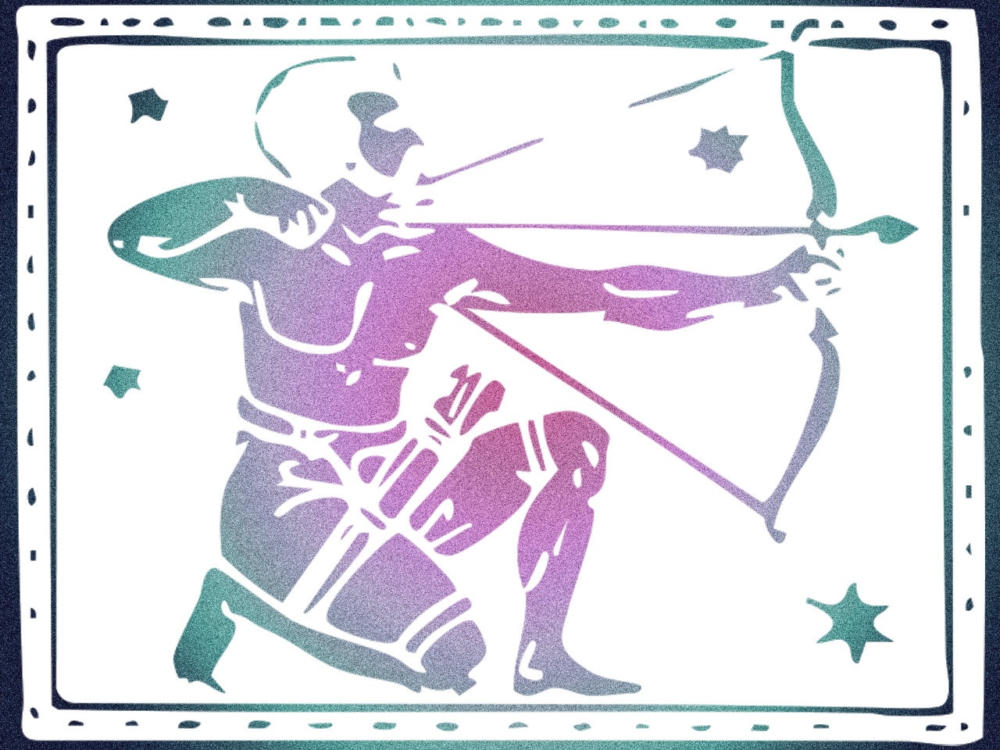
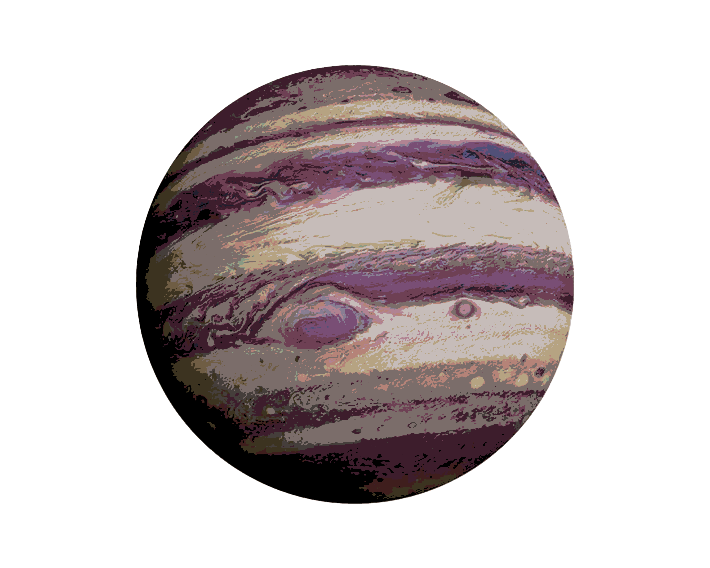

Sagittarius:
Your essential purpose in life is to further and discover more about whatever it is that you regard as important. To enable you to accomplish this you are very able to grasp the whole meaning of any subject that appeals to your sizeable enthusiasm. There is always a danger of running away with yourself and overlooking details, as you get carried along by your zest abd full-blown opinions. However, because youare a goodmanager of things and know how to get the best out of people and circumstances, you have probably equipped yourself with something or someone that keeps you grounded by practical considerations. Some kind of goal, vision or belief is of paramount importsnve in making sense of you life and use of your prolific nature. By the same token, you need to bear in mind that your baility to make a lot of anything should not be employed solely for material ends - otherwise you could get stumped by a need for something that money or influence just cant buy. You also, in an impersonal way, like to create friction for it gives you the feeling that things are on the move. Yours is probably the most positive sign for the simple reason that you see life as an opprotunity. So it does not matter too much how difficult the road ahead may look, for it is still a road - and roads go places!
Your essential purpose in life is to further and discover more about whatever it is that you regard as important. To enable you to accomplish this you are very able to grasp the whole meaning of any subject that appeals to your sizeable enthusiasm. There is always a danger of running away with yourself and overlooking details, as you get carried along by your zest abd full-blown opinions. However, because youare a goodmanager of things and know how to get the best out of people and circumstances, you have probably equipped yourself with something or someone that keeps you grounded by practical considerations. Some kind of goal, vision or belief is of paramount importsnve in making sense of you life and use of your prolific nature. By the same token, you need to bear in mind that your baility to make a lot of anything should not be employed solely for material ends - otherwise you could get stumped by a need for something that money or influence just cant buy. You also, in an impersonal way, like to create friction for it gives you the feeling that things are on the move. Yours is probably the most positive sign for the simple reason that you see life as an opprotunity. So it does not matter too much how difficult the road ahead may look, for it is still a road - and roads go places!